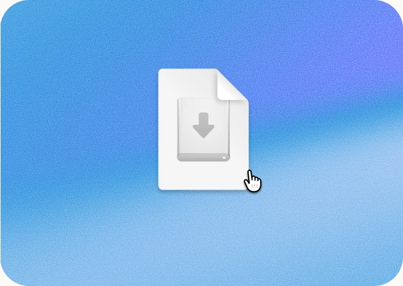
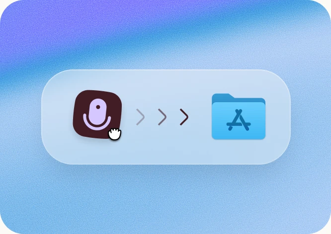
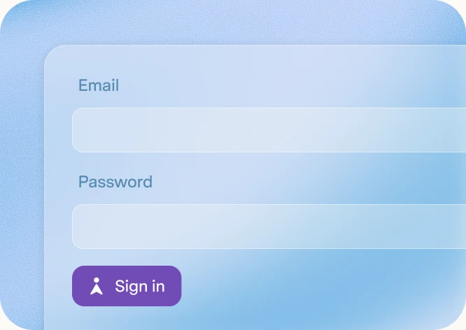

Install for Mac
Your download will begin automatically. If it didn’t, restart the download or continue in your browser.

Superhuman Notetaker.dmg1
Open the downloaded .dmg file

2
Add Notetaker to the Applications folder

3
Open the app and sign in with your Superhuman account